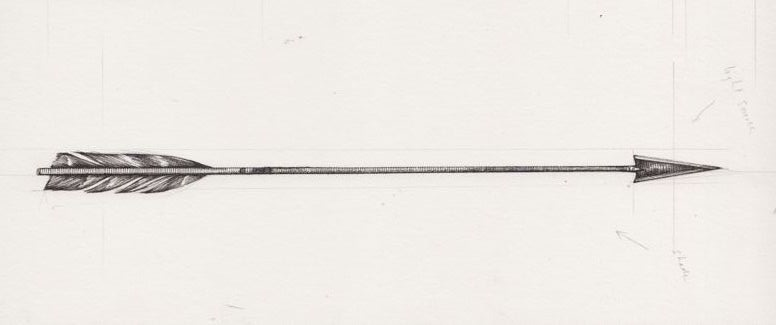

About Cupid
Cupid is the Greek god of love, or better said he is the one that makes people fall in love. For this purpose, he owns a bow and some quite magical arrows. Once shot by one of these, a person falls madly in love with another of Cupid's choice. This action of his is commonly refered to as Cupid's Poison, for which there is no known cure.
One of Cupid's arrows
Cupid's weapons
- Bow - His bow is made of willow wood, painted in gold.
- Arrow - His arrows have a silver pointed end and gold accents. Most of them lack feathers, but if they do posses them, they are a dark red. He never runs out of them and they never miss their target.
- Love potion - His love potion is a secret even to the gods.
Eros (n.)
god of love, late 14c., from Greek eros (plural erotes), "god or personification of love; (carnal) love," from eran, eramai, erasthai "to desire," which is of uncertain origin. Beekes suggests it is from Pre-Greek. The Freudian sense of "urge to self-preservation and sexual pleasure" is from 1922. Ancient Greek distinguished four ways of love: erao "to be in love with, to desire passionately or sexually;" phileo "have affection for;" agapao "have regard for, be contented with;" and stergo, used especially of the love of parents and children or a ruler and his subjects. also from late 14c. The Greek ἔρως, meaning 'desire', comes from ἔραμαι 'to desire, love', of uncertain etymology. R. S. P. Beekes has suggested a Pre-Greek origin.
Random facts
He likes to joke and cause mischief. He tends to threaten to shoot people, but his friends are already imune to his empty words.
He is highly dramatic and excentric.
One of his best friends is Dionysus, seen as they share a common taste for chaotic behaviour and dramatics. In a weird way he also gets along pretty well with Artemis. You can read more about those two in the links below:
Come spring, the grand
apple trees stand
watered by a gushing river
where the maidens’ uncut flowers shiver
and the blossoming grape vine swells
in the gathering shadows.
Unfortunately
for me
Eros never rests
but like a Thracian tempest
ablaze with lightning
emanates from Aphrodite;
the results are frightening ―
black,
bleak,
astonishing,
violently jolting me from my soles
to my soul.
Cupid was the mischievous god of love. But one needs to wonder what happens when said god of love falls in love himself? Is it a spectacular event? Is it love at first sight? Is it an accident? Or is it a crysis for all Of Olympus? A LOT MORE CONTENT WRITTEN BECAUE I WNT TO SEE WHAT THIS ACT LOOKS LIKE HM HM HM HM HM HMH MH MH HM HM HM HM HMH MH MHMH MH MH HM HM HM HMH M HM HMH M HMH MH MH HM HM HMH MH MMMMMMM MMMMMMMMMM M MMMMMMMMMMMMMMM M M M M M M